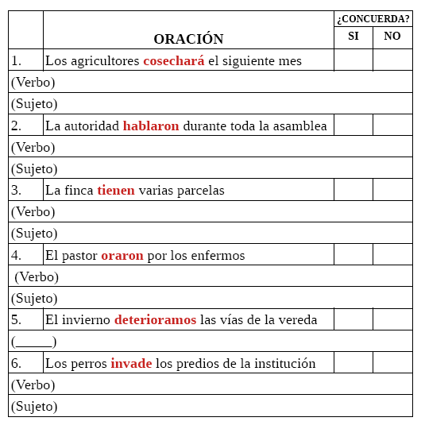
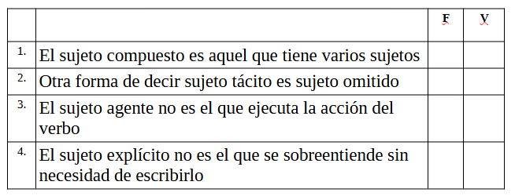

1. ¿Cuáles son las partes principales de una oración?
2. ¿Qué realiza el sujeto en una oración?
3. Mencione un ejemplo en el que el verbo principal concuerde en número y persona
4. Marque según corresponda si
en las siguientes oraciones concuerda el número y la persona con el
verbo. Además, escriba dos veces la oración. En la primera oración
cambie el verbo
,
si lo requiere. En la segunda oración, cambie el
sujeto
.

5. ¿Cuál es el núcleo de un
sujeto? 6. Complete las siguientes
expresiones acerca de los tipos de sujetosv
6.1. El sujeto ________________
es sobre el que recae la acción del verbo. 6.2. El sujeto ________________
es aquel que no se escribe pero se sobreentiende. 6.3. El sujeto _______________
es el que ejecuta la acción del verbo. 6.4. El sujeto _____________ es
el que se ve claramente en la oración.
7. Marque con una equis (X) la casilla debajo de la F si enunciado es FALSO o debajo de la V si el enunciado es
verdadeo.

7. ¿Cuál es la diferencia entre
un sujeto explícito y un sujeto omitido? 8. Las siguientes oraciones tienen sujeto tácito u omitido. Trate de definir cuál es el sujeto de cada
oración . 8.1. Partió un árbol antes del
aguacero. 8.2. Sube llena de pasajeros y de
carga a la vereda. 8.3. Brindaron asistencia de
primeros auxilios a todos los afectados. 8.4. Huyó después del accidente. 8.5. Está navegable para cualquier
embarcación. 8.6. Dirige la armonización de la
tulpa. Una estrategia para
identificar el sujeto de la oración es formular la siguiente
pregunta
Una estrategia para saber qué
acción hace el sujeto de la oración es formular la siguiente
pregunta
Escriba las anteriores preguntas y sus respectivas respuestas para cada una de las oraciones correctas de este
ejercicio.